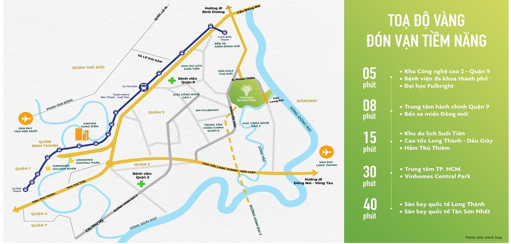
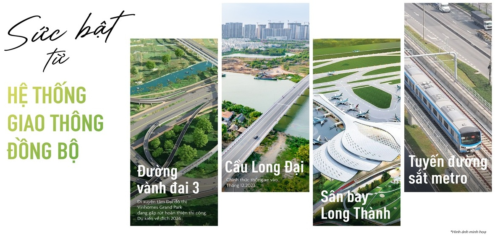
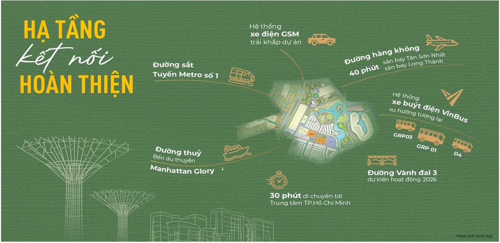

Vinhome Grand Park tọa lạc tại phường Long Thạnh Mỹ, TP. Thủ Đức, TP. Hồ Chí Minh, là một đại đô thị quy mô 271ha được quy hoạch bài bản theo mô hình “thành phố trong lòng thành phố” với tầm nhìn chiến lược, tích hợp đầy đủ các chức năng sống, làm việc, vui chơi và học tập. Dưới đây là tóm tắt cách quy hoạch vị trí và cấu trúc dự án:
Vị trí chiến lược:
- Tọa độ: Nằm ở phía Đông TP.HCM, thuộc trung tâm TP. Thủ Đức – khu vực được định hướng trở thành “thành phố sáng tạo” và trung tâm kinh tế, công nghệ của vùng Đông Nam Bộ.
- Mặt tiền và kết nối:
- Dự án tiếp giáp các tuyến đường huyết mạch: đường Nguyễn Xiển (lộ giới 30m), đường Phước Thiện, gần Vành đai 3 và cao tốc TP.HCM - Long Thành - Dầu Giây.
- Giáp sông Đồng Nai (phía Đông) và sông Tắc (phía Nam), tạo không gian phong thủy hài hòa và cảnh quan tự nhiên.
- Liên kết vùng:
- 5-10 phút: Kết nối đến Khu công nghệ cao Quận 9, Vincom Mega Mall, bến xe Miền Đông mới, ga Metro số 1 (dự kiến hoạt động 2024).
- 15-20 phút: Đến trung tâm Quận 1, Quận 7 qua các tuyến đường chính như Mai Chí Thọ hoặc hầm Thủ Thiêm.
- 30 phút: Đến sân bay quốc tế Long Thành (dự kiến hoàn thành giai đoạn 1 năm 2025).
- Tiềm năng: Vị trí nằm trong khu vực có tốc độ phát triển hạ tầng nhanh, hưởng lợi từ các dự án lớn như Metro số 1, cầu Cát Lái, và quy hoạch TP. Thủ Đức thành trung tâm kinh tế - công nghệ.

Tầm nhìn quy hoạch:
- Đô thị thông minh 4.0: Tích hợp công nghệ vào quản lý và vận hành (an ninh, giao thông, dịch vụ cư dân). Cư dân sử dụng ứng dụng thông minh để điều khiển căn hộ, đặt dịch vụ, hoặc tương tác cộng đồng.
- Bền vững: Tối ưu hóa không gian xanh, sử dụng năng lượng tái tạo (xe buýt điện, hệ thống chiếu sáng tiết kiệm), bảo vệ môi trường sông nước.
- Kinh tế và cộng đồng: Thu hút hơn 60.000 cư dân, tạo thành cộng đồng đa văn hóa, đồng thời là trung tâm kinh tế mới với shophouse, văn phòng, và khu thương mại sầm uất.

Lợi thế quy hoạch:
- Vị trí vàng: Nằm ở tâm điểm TP. Thủ Đức, hưởng lợi từ sự phát triển hạ tầng và chính sách ưu tiên của thành phố.
- Tích hợp toàn diện: Kết hợp “sống - làm việc - vui chơi” trong một khu đô thị, giảm nhu cầu di chuyển xa.
- Tăng giá trị bất động sản: Quy hoạch đồng bộ, tiện ích đa dạng, và hạ tầng giao thông phát triển giúp Vinhome Grand Park trở thành điểm đầu tư hấp dẫn.
Tóm lại, Vinhome Grand Park được quy hoạch như một đô thị kiểu mẫu, với vị trí chiến lược, hạ tầng hiện đại, tiện ích đẳng cấp, và không gian sống xanh, đáp ứng xu hướng đô thị hóa bền vững và thông minh tại TP.HCM.